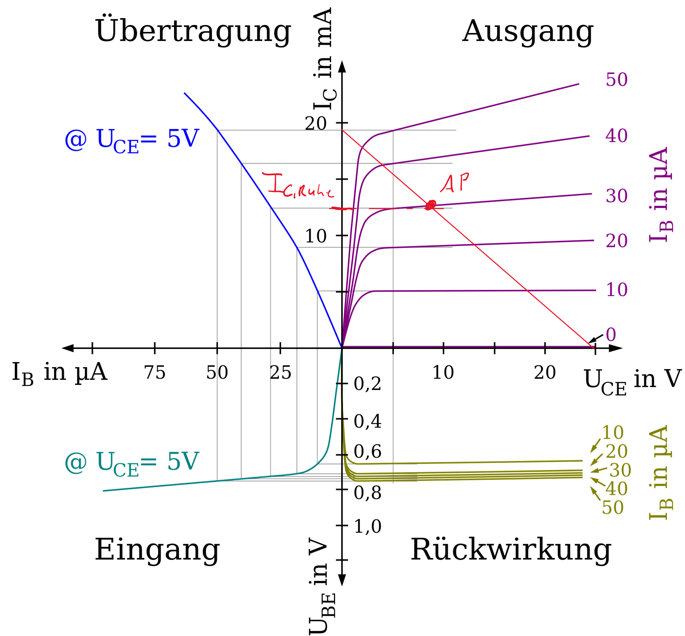
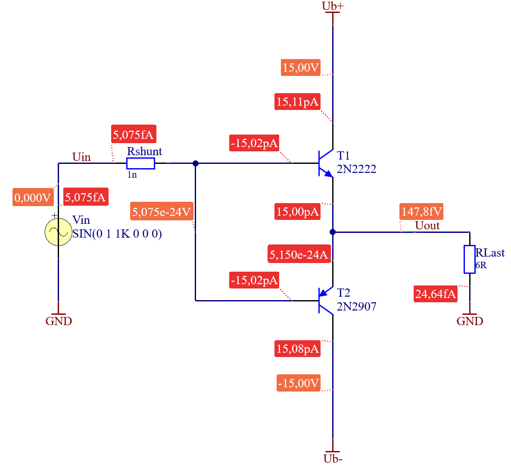
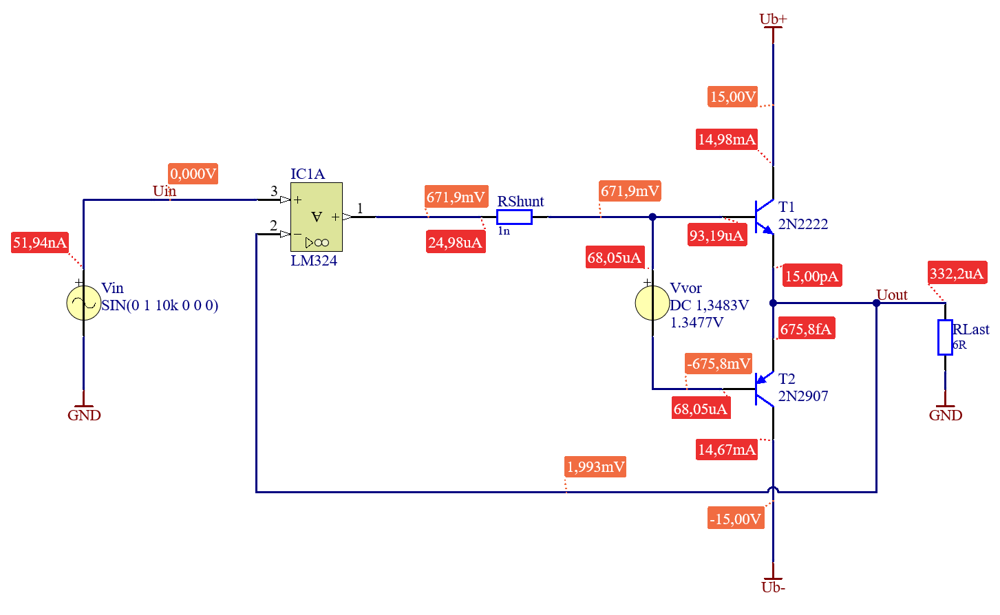
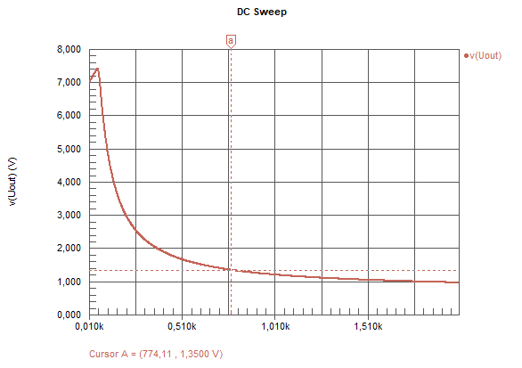
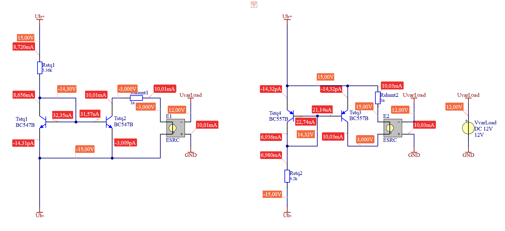
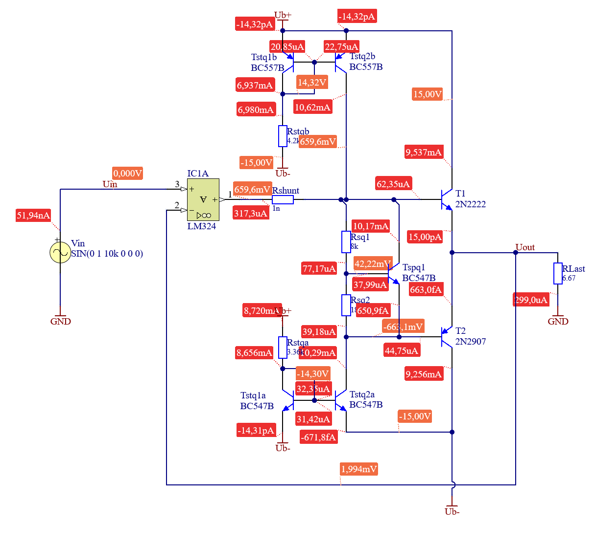

Plausibilität und Qualitätsbeurteilung mittels Simulation
Übersichtliches zeichnen komplexer Schaltpläne
Strukturiertes, Zeitoptimiertes Dokumentieren der Arbeit
Transistorverstärker, wie sie bisher bekannt sind Kapitel 2.2, in denen ein Transistor in einem Arbeitspunkt betrieben wird, haben bei höheren Leistungen eine zu hohe Verlustleistung. Die Verlustleistung ist proportional zum Strom durch den Kollektor \(I_C\) in Ruhe, also ohne Signal am Eingang. Bei der Emitterschaltung ist der Ruhestrom höher, da der Arbeitspunkt auf der Kennlinie weiter “oben” ist. Diese Betriebsart wird auch A - Betrieb genannt.

Abbildung 3.1: Bipolartransistor Arbeitspunkt und Ruhestrom [1]
Um höhere Leistungen und eine geringere Verlustleistung zu erreichen, muss der Arbeitspunkt nach “unten” also zu einem kleineren \(I_C\) gebracht werden. Wird dies am Beispiel des Verstärkers in Emittergrundschaltung Kapitel 2.2 gemacht, würde das bedeuten, dass nur noch eine Halbwelle verstärkt wird. Um dies zu verhindern, werden ein PNP und ein NPN Transistor in Gegentakt geschaltet. Jeder Transistor übernimmt nun die Verstärkung einer Halbewelle. Warum der \(I_C\), und damit die Verlustleistung, trotzdem nicht ganz Null sein kann, sehen wir im folgenden Teil.
3.1 Die Gegentaktendstufe
Um zu vermeiden, dass der Arbeitspunkt eine höhere Verlustleistung aufgrund eines höheren \(I_C\) verursacht, und trotzdem ein symmetrisches Signal verstärkt werden kann, können zwei Transistoren eingesetzt werden. Damit ist auch die maximale Leistung höher, da der Arbeitsbereich pro Transistor besser ausgenutzt wird. Ein Transistor verstärkt die positiven Signale. Der andere die negativen. Dies wird Gegentaktendstufe genannt und die die Betriebsart wird als B bezeichnet. Wird eine reale Schaltung entwickelt ist stets darauf zu achten, dass die Bauteileigenschaften berücksichtigt werden. Speziell die Maximalwerte dürfen nicht überschritten werden.

Abbildung 3.2: Bipolartransistoren in Gegentakt
Wird diese Schaltung einem Test unterzogen zeigt sich, dass das Ergebnis wenig zufriedenstellend ist. Weder wird die Amplitude erreicht, das Signal wird gedämpft, noch folgt der Ausgang dem sinuiden Verlauf des Eingangs. Speziell an den Nulldurchgängen gibt es beträchtliche Verzerrungen. Als Qualitätskriterium soll von nun an die Differenz zwischen Ausgangsspannung und Eingangsspannung herangezogen werden.
Abbildung 3.3: Bipolartransistoren in Gegentakt, Simulationsergebnisse
Simulationsparameter
Wert
Bemerkung
\(V_{in}\) Frequenz
1 kHz
\(V_{in}\) Amplitude
1 V
Simulierte Perioden
3
3.2 Rückkopplung
Um den Verlauf der Ausgangsspannung an den Verlauf der Eingangsspannung anzupassen, wird eine Gegenkopplung verwendet. Dazu ist eine Subtraktion des Ausgangssignals vom Eingangssignal notwendig. Als Transistorschaltung würde sich eine Differenzverstärkerschaltung anbieten. Für ein noch besseres Ergebnis wird hier ein OPV eingesetzt. Durch die Rückkopplung der gesamten Ausgangsspannung wird eine Spannungsverstärkung von Eins erreicht. Das Ausgangssignal folgt dem Eingangssignal. Eine legitime Frage ist, warum nicht einfach nur der OPV verwendet wird? Hier kann auf die Überschrift verwiesen werden. Es soll Leistung verstärkt werden. Und die Ausgangsleistung eines OPV reicht in der Regel nicht aus um beispielsweise Lautsprecher zu betreiben.
Abbildung 3.4: Gegentaktendstufe mit Rückkopplung
Mittels Simulation kann nun erneut die Qualität überprüft werden. Es ist zu erkennen, dass die Amplitude erreicht wird. An den Nulldurchgängen sind jedoch noch Störungen zu sehen. Die Ursache dieser Störungen sind die Kennlinien der Transistoren. In Abbildung Abbildung 3.1 lässt sich erkennen, dass sich in der Nähe des Ursprunges ein Knick befindet. Erst ab einer \(U_{BE} \ \) größer von ca. \(0,7 \ \mathrm{V}\) beginnt der Transistor zu leiten. Das bedeutet, dass Eingangssignale kleiner als diese minimal notwendige Basis- Emitterspannung nicht verstärkt werden.
Der OPV wirkt zwar auch den Übergabeverzerrungen entgegen, allerdings ist er stark abhängig von der Frequenz. Je schneller im Verhältnis zum Signal der OPV sein Ausgangssignal ändern kann, umso kleiner sind die Verzerrungen. Wie schnell der OPV seinen Ausgang ändern kann, hängt von der Slew-Rate mit der Einheit \(\mathrm{\frac{V}{s}}\) ab.
Abbildung 3.5: Gegentaktendstufe mit Rückkopplung, Simulationsergebnisse
Simulationsparameter
Wert
Bemerkung
\(V_{in}\) Frequenz
10 kHz
\(V_{in}\) Amplitude
1 V
Simulierte Perioden
3
3.3 Vorspannen
Um die Übergabeverzerrungen zu eliminieren wird die B-E Strecke vorgespannt. Das bedeutet eine Spannung anzulegen welche größer ist als die Schwellspannung der Basis- Emitter Strecke. Damit ist der Transistor bereits im leitenden Bereich und wird nur noch vom Eingangssignal weiter ausgesteuert.
Da durch das Vorspannen auch ein Kollektorstrom durch den Transistor fließt wenn am Eingang \(0 \ \mathrm{V} \ \) anliegen erhöhen sich die Verluste. Dieser Kollektorstrom wird auch als Ruhestrom bezeichnet \(I_{C,Ruhe} \ \). Um den Ruhestrom möglichst klein zu halten muss die Spannungsquelle an die Transistoren und deren Fertigungstoleranzen angepasst werden.

Abbildung 3.6: Gegentaktendstufe mit vorgespannten Transistoren
Mittels DC-Sweep kann die Spannungsquelle auf einen gewünschten \(I_C\) eingestellt werden. Der \(I_C\) ist so zu wählen, dass der Arbeitspunkt außerhalb des nichtlinearen Bereichs der Transistorkennlinie liegt. Gleichzeitig soll er so klein als Möglich sein um die Verluste gering zu halten. Hier soll der \(I_C\) ein Zehntel des maximalen Laststromes betragen.
Simulationsparameter
Wert
Bemerkung
\(V_{vor}\) min
1,2 V
\(V_{vor}\) max
1,4 V
\(V_{vor}\) step size
1 mV
Mit dem Cursor können die Ergebnisse exakt abgelesen werden.
Simulationsergebnis
Wert
Bemerkung
\(V_{vor}\) bei \(I_C\) = 15 mA an T1
1,3479 V
\(V_{vor}\) bei \(I_C\) = 15 mA an T2
1,3489 V
Da es sich um unterschiedliche Transistoren handelt, ist natürlich auch der Zusammenhang zwischen \(U_{BE}\) und \(I_C\) ein anderer. Da die Werte sehr nahe beieinander liegen kann ein gerundetes arithmetisches Mittel als Ergebnis für \(V_{Vor}\) verwendet werden.
Der Verstärker hat nun eine Qualität, welche das Verstärken von niederfrequenten Signalen in ausreichender Güte erlaubt, um Beispielsweise Musik zu verstärken. Dies ist am geringen Unterschied zwischen der Eingangsspannung und der Ausgangsspannung zu erkennen.
Abbildung 3.7: Gegentaktendstufe mit vorgespannten Transistoren, Simulationsergebnisse
Simulationsparameter
Wert
Bemerkung
\(V_{in}\) Frequenz
10 kHz
\(V_{in}\) Amplitude
1 V
Simulierte Perioden
3
Hinweis
Welche anderen Darstellungen des Verhältnisses zwischen Ausgang und Eingang würden sich eignen um Nachzuweisen, dass die Verzerrung akzeptabel ist?
3.4 Reale Spannungsquelle
Ideale Spannungsquellen, wie oben eingezeichnet, existieren nicht. Daher muss die ideale Spannungsquelle mit einer realen Spannungsquelle ersetzt werden. Aus kostengründen muss dies mit möglichst wenigen Bauteilen geschehen. Daher fällt ein Netzteil aus. Eine Schaltung mit nur drei Bauteilen die die Aufgabe erledigen kann ist ein sogenannter “\(U_{BE}\)-Vervielfacher” [2, pp. 301].
In Abbildung 3.12 wird die Schaltung gezeigt. Um die Schaltung zu dimensionieren kann der \(U_{BE}\)-Vervielfacher alleine betrachtet werden. \(U_{out}\) ist aus Kapitel 3.3 bekannt. Es müssen nun also die Widerstände \(R_{sq1}\) und \(R_{sq2}\) so dimensioniert werden.
Der Ablauf ist wie folgt und gilt für alle Dimensionierungsaufgaben von Schaltungen.
3.4.1\(U_{BE}\)-Vervielfacher berechnen.
Dabei wird die Schaltung analytisch, also mit Formeln berechnet.
Es soll wie bei der Dimensionierung der Emitterverstärkerschaltung klar gekennzeichnet werden woher die Formeln und Werte kommen.
Gesucht wird \(R_{sq1}\) und \(R_{sq2}\) so, dass \(U_{out}\) der gesuchten Vorspannung aus Kapitel 3.3 entspricht.
Die Berechnung von Transistorschaltungen erfolgt immer mit gewissen Annahmen. Eine exaktere, und damit kompliziertere, Berechnung ist nicht sinnvoll, da die Bauteiltoleranzen und Temperatureinflüsse groß sind. Folgende Faustegeln gelten für die Berechnung:
\(I_1\) kann aus dem Knoten 2 berechnet werden indem Gleichung 3.10 eingesetz wird.
\[
0 = I_{1} - I_{2} - I_{B}
\tag{3.8}\]
\[
I_{1} = I_{2} + I_{B}
\tag{3.9}\]
\[
I_{2} = 10 I_{B}
\tag{3.10}\]
\[
I_{1} = 11 I_{B}
\tag{3.11}\]
Wird nun noch Gleichung 3.16 in Gleichung 3.11 eingesetzt erhält man eine Gleich für \(I_1\) in Abhängigkeit von \(I_C\).
\[
I_{1} = \frac{11 I_{C}}{100}
\tag{3.12}\]
Über den Knoten 1 wird der Zusammenhang zwischen den Strömen dargestellt. Für \(I_L\) muss der maximale Lastrom eingesetz werden. Dieser kann aus einer Transientensimulation in Kapitel 3.3 ermittelt werden. Der Strom \(I_{spg}\) kann mit der Faustregel Gleichung 3.3 bestimmt werden. Werden diese Informationen und Gleichung 3.17 in Knoten 1 Gleichung 3.13 eingesetzt, kann durch umformen, \(I_c\) berechnet werden.
Wird der Spannungsteiler aus \(R_{sq1}\) und \(R_{sq2}\) als unbelastet betrachtet, indem sichergestellt wird, dass \(I_1 >> I_B\) ist, vereinfacht sich die Berechnung erheblich. Allerdings sind damit auch höhere Ruheströme und damit Verluste verbunden.
3.4.2 Überprüfen und einstellen mittels Simulation
Nun wird mittels Simulation die Berechnung überprüft und die Schaltung exakt eingestellt. Zur Überpürfung wird eine “OP” Simulation verwendet. Um die Schaltung einzustellen kann eine “DC-Sweep” Simulation, wie dies zum Beispiel in Kapitel 3.3 zur Bestimmung der korrekten Vorspannung gemacht wurde, verwendet werden.
Werden die oben berechneten Werte mittels Simulation überpürft, erhält man eine gute Übereinstimmung für \(U_{out}\). Um eine noch Bessere Übereinstimmung zu erzielen können die Widerstände mittels DC-Sweep eingestellt werden. Dazu wird \(R_{sq1}\) laut Berechnung gewählt und Widerstand \(R_{sq2}\) “gesweept”. Ziel ist es Den Widerstandswert \(R_{sq2}\) so zu bestimmen, dass \(U_{out}\) den notwendigen Wert der Vorspannung hat, welcher in Kapitel 3.3 mittels “DC-Sweep” ermittelt wurde \(U_{out} = 1.35 \ \mathrm{V}\).

Abbildung 3.10: Reale Spannungsquelle, DC-Sweep
Simulationsparameter
Wert
Bemerkung
Rsq2 Sweep Bereich
1 Ohm bis 20 kOhm in 100 Ohm Schritten
Simulationsergebnis
Wert
Bemerkung
\(R_{sq2}\) bei \(U_{out} = 1,35 \ \mathrm{V}\)
\(R_{sq2} = 774,11 \ \Omega\)
Eine neuerliche Simulation bestätigt das Ergebnis.
Ist aus dem Schaltungsaufbau zu erwarten, dass Bauteiltoleranzen und Umgebungsbedingungen (z.B. Temperatur) eine Rolle spielen, müssen Potentiometer in der realen Schaltung vorgesehen werden um die diese Effekte zu kompensieren. Beim \(U_{BE}\)-Vervielfacher würde \(R_{sq2}\) als Trimpotentiometer ausgeführt werden. Weiters ist zu beachten, dass für einen realen Aufbau Widerstandswerte aus den E-Reihen zu wählen sind!
3.4.4 Reale Spannungsquelle in der Schaltung
Der zuvor dimensionierte \(U_{BE}\)-Vervielfacher kann nun in die Schaltung eingebaut werden.
Abbildung 3.12: Gegentaktendstufe mit realer Vorspannungsquelle
Es gilt aufs neue die Qualität zu überprüfen. Dabei werden die selben Parameter wie in Kapitel 3.3 zur Beurteilung heran gezogen. Zuerst wird wieder eine Operating Point Analyse (OP) durchgeführt um den Arbeitspunkt zu kontrollieren, Abbildung 3.13. Bereits hier ist zu erkennen, dass die gewünschte Vorspannung nicht erreicht wird.
Abbildung 3.13: Gegentaktendstufe mit realer Vorspannungsquelle, Simulation 1
Abbildung 3.14: Gegentaktendstufe mit realer Vorspannungsquelle, Transienten Simulation
Simulationsparameter
Wert
Bemerkung
\(V_{in}\) Frequenz
10 kHz
\(V_{in}\) Amplitude
1 V
Simulierte Perioden
3
In der Simulation über die Zeit, der Transientensimulation, sind auch eindeutig die Übergabeverzerrungen zu sehen. DEr Grund dafür liegt in der fehlenden Stromversorgung der Spannungsquelle.
Hinweis
Welche noch Kostengünstigere Variante zur Realisierung der Vorspannung mit Dioden gibt es? Welchen Nachteile hat diese Lösung? Warum wird nicht einfach eine Stromquelle mit einem Widerstand zur Vorspannung genutzt?
Abbildung 3.15: Gegentaktendstufe mit Stromversorgung, Simulation 1
Mittels Arbeitspunktsimulation ist zu sehen, dass die Vorspannung durch, den einbau der Stromquellen erreicht wird. Die Höhe des Stromes richtet sich nach der Dimensionierung von \(I_{spqg}\) in Kapitel 3.4.1.
Abbildung 3.16: Gegentaktendstufe mit Stromversorgung, Transienten Simulation
Simulationsparameter
Wert
Bemerkung
\(V_{in}\) Frequenz
10 kHz
\(V_{in}\) Amplitude
1 V
Simulierte Perioden
5
Die Verzerrungen sind wieder auf dem Niveau aus Kapitel 3.3 und damit akzeptabel. Nun müssen nur noch die idealen Stromquellen mit realen ersetzt werden.
3.6 Reale Stromquelle
Als geeignete Stromquellen bietet sich der sogenannte Stromspiegel an. Dieser kann wieder Analytisch berechnet werden nach [2, pp. 157] oder mittels DC-Sweeps des Widerstandes bestimmt werden. Zur Simulation eignen sich als Last Spannungsgesteuerte Spannungsquellen.

Abbildung 3.17: Gegentaktendstufe mit realen Stromquellen, Simulation 1
Die Stabilität der Stromquelle kann ermittelt werden indem die Lastspannung “gesweept” wird. Dabei soll der Verlauf des Stromes möglichst horizontal, konstant, sein.
Abbildung 3.18: Gegentaktendstufe mit realen Stromquellen, DC Sweep
Nachdem die ausreichende Stabilität gezeigt wurde können die Stromquellen eingebaut werden und die gesamte Schaltung auf ihre Qualität überprüft werden.

Abbildung 3.19: Gegentaktendstufe mit realen Stromquellen, Arbeitspunktanalyse
Abbildung 3.20: Gegentaktendstufe mit realen Stromquellen, Transienten Analyse
Simulationsparameter
Wert
Bemerkung
\(V_{in}\) Frequenz
10 kHz
\(V_{in}\) Amplitude
1 V
Simulierte Perioden
5
Vergleicht man nun Ergebnis Abbildung 3.7, bei welchem die Vorspannung ideal ausgeführt wurde und das Ergebnis Abbildung 3.20 mit realen, und damit tatsächlich fertigbar, Quellen ist die Qualitätsunterschied zu vernachlässigen. Das Schaltung gilt damit als fertig dimensioniert. Natürlich kann die Schaltung erweitert, adaptiert und verbessert werden. Siehe dazu Kapitel 3.8.
3.7 Praktische Herangehensweise
welche Last muss versorgt werden.
welche Lastströme sind gewünscht.
Auswahl passender Transistoren in Bezug auf die maximale Werte.
Definition der Qualitätsparameter, z.B. Differenz der ein und Ausgangspannungen, Oberwellen Anteile, …
3.8 Abwandlungen und Erweiterungen
Wie könnte eine Strombegrenzung, Kurzschlusssicherheit, umgesetzt werden?
Wie könnte die Rückkopplung die hier mit einem OPV umgesetzt wurde noch realisiert werden?
Wie könnte die Vorspannung mit Dioden umgesetzt werden?
Wie könnte die Leistung weiter erhöht werden?